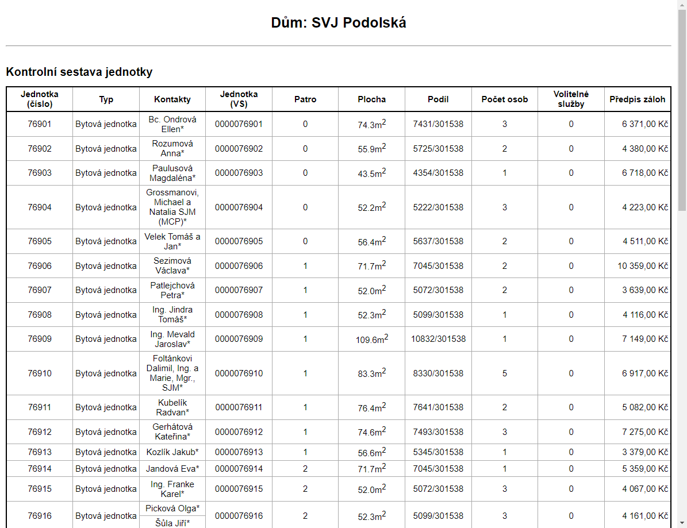
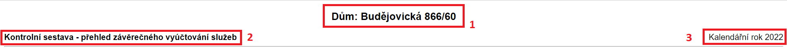
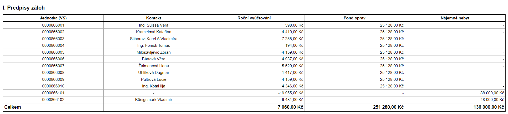
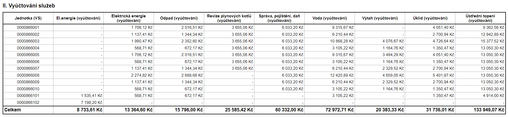
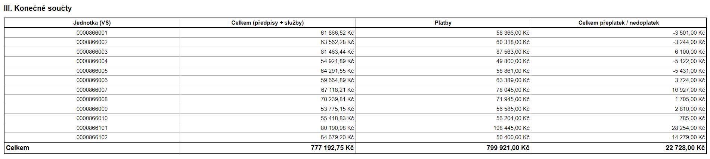
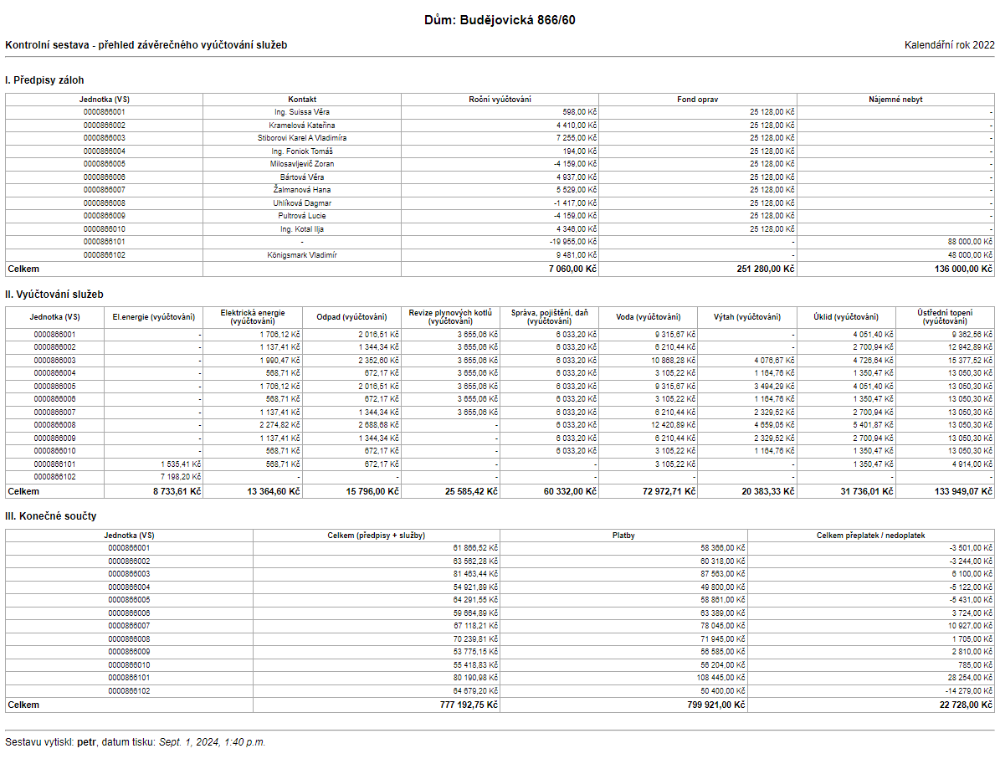

Building reports
A report is just like any other view in Django. We understandably have to use CBV as the whole report system is built with the approach in mind.
First things first, let's create our view and extend the ReportView class.
When we open our view we get an ImproperlyConfigured exception saying ReportMixin requires either a definition of 'report_headline' or an implementation of 'get_report_headline()'. So we have to define our report headline.
class MyReportView(ReportView):
headline = 'My fancy report'
tables = [] # So we can see the complete barebones report

At this stage, our report isn't very useful. Before we get into building tables, we need to familiarize ourselves with the basic building blocks.
Creating our first table
Let's say we want to create a two variable truth table. A table with two columns for the two variables would look like this:
At this point, we could add this table instance into the table list in our report, but we would only get the table header (the first row), because we haven't actually added any data to it yet.
We have two options when it comes to adding rows, an implicit function (add_row_impl()) and an explicit function (add_row_expl()). If not enough cells in a row is provided to match the number of columns, empty cells are rendered in instead.
add_row_impl()-
This function takes in an arbitrary number of cells.
add_row_expl()-
This function expects an instance of
ReportTableRow.
class MyReportView(ReportView):
headline = 'My fancy report'
def get_tables(self):
truth_table = ReportTable(('A', 'B'), heading="Two variable truth table")
truth_table.add_row_impl(ReportTableCell('0'), ReportTableCell('0'))
truth_table.add_row_impl(ReportTableCell('1'), ReportTableCell('0'))
truth_table.add_row_impl(ReportTableCell('0'), ReportTableCell('1'))
truth_table.add_row_impl(ReportTableCell('1'), ReportTableCell('1'))
return [truth_table]
Production example 1
So that we can understand the system more, let's make reports that are already built and in production. This report will consist of a singular table where each row represents a single 'jednotka' and each column an important property of each instance.
The columns required are the following:
- Číslo jednotky
- Typ
- Kontakty
- Variabilní symbol jednotky
- Patro
- Plocha (v m2)
- Podíl
- Počet osob
- Volitelné služby
- Předpis záloh
class SestavaByty(DumReportView): # (1)!
title = 'Sestava jednotky' # (2)!
def get_tables(self):
table = ReportTable((
'Jednotka<br>(číslo)', 'Typ', 'Kontakty', 'Jednotka<br>(VS)', 'Patro', 'Plocha', 'Podíl', 'Počet osob',
'Volitelné služby', 'Předpis záloh'
), 'Kontrolní sestava jednotky') # (3)!
for jednotka in Byty.objects.vyber_dum(self.get_referral_dum()): # (4)!
table.add_row_impl(
ReportTableCell(jednotka.cislo),
ChoiceCell(jednotka.typ_jednotky, TypyJednotek), # (5)!
ReportTableCell([
(
f'{contact.kontakt}*' if isinstance(jednotka.seznam_kontaktu_report, VlastniciQuerySet)
else contact.kontakt
)
for contact in jednotka.seznam_kontaktu_report
]), # (6)!
ReportTableCell(jednotka.variabilni),
ReportTableCell(jednotka.patro),
ReportTableCell(f'{jednotka.rozloha}m<sup>2</sup>'),
ReportTableCell(jednotka.velikost_podilu_zlomek),
ReportTableCell(jednotka.pocet_osob),
ReportTableCell(jednotka.pocet_volitelnych_sluzeb),
CurrencyCell(secti_platne_definice_zaloh_byt(jednotka))
)
return [table]
- We're using the extended version of the base
ReportView, because it has convenient features tailored to reports that have anything to do with 'Domy' of 'Byty'. - Setting the page title to 'Sestava jednotky'.
- Report table instantiation. Passing in a tuple of column names and a table heading.
- Iterating over all the jednotky and adding a row to the table for each one.
- Property
jednotka.typ_jednotkyreturns either 'A' or 'B'. TheTypyJednotekis a mapping of these two values to their corresponding names. Instead of using the genericReportTableCelland an if statement, we use theChoiceCellthat is designed for this purpose. - The
seznam_kontaktu_reportproperty returns either aVlastniciQuerySetorNajemniciQuerySet. A contact that is a 'Vlastnik' needs to have a asterisk attached.

Production example 2
Let's now take a much more complex report. In this example, we will look at the 'Závěrečné vyúčtování služeb'.
It consists of an extra header content, a custom table renderer and three tables.
The individual tables are in their separate classes as not to introduce too much clutter in the views.py files.
class SestavaZaverecneVyuctovaniSluzeb(DumReportView):
title = 'Závěrečné vyúčtování služeb'
extra_header = TemplateContent(
'snippets/report_kontrolni_sestava_period_extra_header.html',
sestava='přehled závěrečného vyúčtování služeb'
) # (1)!
report_renderer = 'snippets/zaverecne_vyuctovani_sluzeb_report_renderer.html' # (2)!
def get_tables(self):
tables = []
# Tabulka I.
predpisy_zaloh_table = PrehledZaverecnehoVyuctovaniSluzeb(self.referral_dum, self.vybrany_rok)
# Tabulka II.
vyuctovani_sluzeb_table = DetailniVyuctovaniSluzeb(self.referral_dum, self.vybrany_rok)
# Tabulka III.
summary_table = KonecneSouctySluzeb(self.referral_dum, self.vybrany_rok, predpisy_zaloh_table.jednotky_totals)
tables.extend([predpisy_zaloh_table, vyuctovani_sluzeb_table, summary_table])
return tables
- A common header extracted into a template extra content. Discussed in a following section.
- A custom renderer used to insert a print-only page break after every table. The renderer code itself can be seen in a codeblock below.
The custom renderer, as mentioned, adds a print-only page break after every table, so that the printed report has each paper dedicated to every table.
{% extends 'snippets/report_renderer.html' %}
{% block table_after %}
{{ block.super }}
{% if not forloop.last %}
<div class="print-page-break"></div>
{% endif %}
{% endblock %}
Extra content
The view takes advantage of the extra_header property. The TemplateContent is used with the template report_kontrolni_sestava_period_extra_header.html.
The report header is captured on the image below.
The report title (labeled with a 1) is handled by the DumReportView. It is aware of what 'Dum' we are dealing with and using that information it dynamically creates the report title.
The extra content template gets passed a sestava parameter (used in the title labeled with a 2) and already has access to the year of the report (labeled with a 3) so using this extra content saves on repeating code.

Individual tables
In this section, the source code for the three tables is shown and described. Only the main construction part of the class is shown, because there is no need to show setting the columns, titles, etc.
for jednotka in self.aktivni_jednotky(date(self._year, 12, 31)):
sluzby = []
for category in self._categories: # (1)!
amount = get_kategorie_zalohy_castka(jednotka, category, self._year)
sluzby.append(CurrencyCell(amount))
self.totals[list(self._categories).index(category)] += amount if amount is not None else 0
self.add_row_impl(
ReportTableCell(jednotka.variabilni),
ReportTableCell(jednotka.primarni_kontakt),
*sluzby # (2)!
)
self.add_row_expl(ReportTableRow.total_table_sum_row(
EmptyCell(), *[CurrencyCell.sum_cell(total) for total in self.totals]
)) # (3)!
- Compiling the categories.
- Adding the cells. Every 'jednotka' may have a different amount of cells so there might be empty cells in some columns.
- Adding a final summation row. Displays the totals of all the rows summed up.

totals = {index: 0 for index, sluzba in enumerate(self.sluzby_domu_mimo_fo)} # (1)!
for jednotka in self.aktivni_jednotky(date(self.year, 12, 31)):
def handle_sluzba(sluzba, index):
suma = self.soucet_vyuctovani_sluzby_pro_jednotku(jednotka, sluzba, self.year)
totals[index] += suma
return suma if suma != 0 else None
self.add_row_impl(
ReportTableCell(jednotka.variabilni),
*[
CurrencyCell(handle_sluzba(sluzba_definice, index))
for index, sluzba_definice in enumerate(self.sluzby_domu_mimo_fo)
] # (2)!
)
self.add_row_expl(ReportTableRow.total_table_sum_row(
*(CurrencyCell.sum_cell(total) for total in totals.values())
)) # (3)!
- A dictionary to keep track of totals of 'služby' to later display in the last summation row.
- The table has a variable amount of columns depending on what sluzby the 'Dum' has.
- Adding a final summation row. Displays the totals of all the rows summed up.

predpisy_total = 0
platby_total = 0
celkem_total = 0
for jednotka in self.aktivni_jednotky(date(self.year, 12, 31)):
sluzby_bez_fo = self.soucet_vyuctovani_sluzeb_pro_jednotku(
jednotka, self.sluzby_domy_mimo_fo(), self.year
)
predpisy = sluzby_bez_fo + self.jednotky_totals[jednotka.variabilni]
platby = self.jednotka_zaplaceno_na_zalohach(jednotka, self.year)
celkem = round(platby - predpisy)
self.add_row_impl(
ReportTableCell(jednotka.variabilni),
CurrencyCell(predpisy),
CurrencyCell(platby),
CurrencyCell(celkem)
)
predpisy_total += predpisy
platby_total += platby
celkem_total += celkem
self.add_row_expl(ReportTableRow.total_table_sum_row(
CurrencyCell.sum_cell(predpisy_total),
CurrencyCell.sum_cell(platby_total),
CurrencyCell.sum_cell(celkem_total)
)) # (1)!
- Adding a final summation row. Displays the totals of all the rows summed up.

The final report looks like this:
